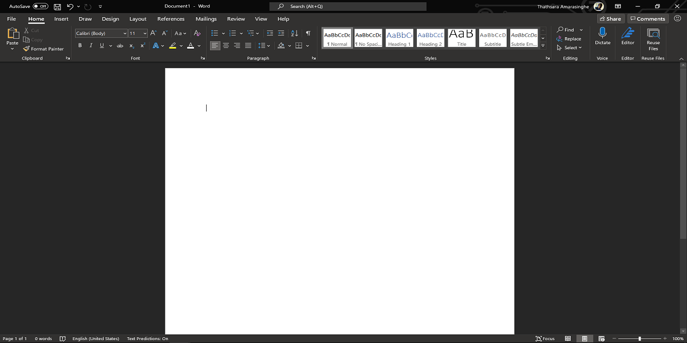

Com alguns recursos a mais, o Word possui as mesmas características do Wordpad na hora de formatar caracteres e parágrafos. Neste módulo abordaremos apenas os conceitos básicos de formatação de texto para compreender os recursos fundamentais do Word. Para um entendimento mais a fundo de tipografia sugiro que faça o Curso Completo de Design Gráfico em:
JorgeOliveiraSantos.GitHub.io Todos os aplicativos do Office possuem um layout básico que é composto pelo espaço de trabalho no centro da tela, que pode ser a página, a planilha ou o slide em que estamos trabalhando. Acima do espaço de trabalho temos a Barra de Menus e a Faixa de Opções, com as opções desses menus. Abaixo do espaço de trabalho temos a Barra de Status e ocasionalmente guias e/ou barra de rolagem acima da Barra de Status. Na Barra de Status temos o controle deslizante do zoom, mas é possível controlar o zoom utilizando o Control e a scroll do mouse.
O Windows vem com uma boa quantidade de famílias de fontes pré-instaladas. Uma família de fonte é um estilo de fonte como Arial que contém variações como itálico, negrito etc.
Este texto está na fonte Arial
Este texto está na fonte Garamond
Este texto está na fonte Times New Roman
Este texto está na fonte Times New Roman em Negrito
O tamanho da fonte é medido em pontos. Em um único texto, tamanhos maiores podem ser utilizados no título e menores no corpo, o tamanho do texto pode ainda variar de acordo com o local onde aparecerá.
Este texto tem tamanho 11pt
Este texto tem tamanho 16pt
Este texto tem tamanho 24pt
Os estilos de caractere incluem negrito, itálico, sublinhado, tachado, subscrito e sobrescrito:
Este é um texto normal
Este texto está em negrito
Este texto está em itálico
Este texto está sublinhado
Este texto está em itálico e negrito
Este texto está tachado
O 2 de H2O é um exemplo de texto subscrito.
O 2 de 8m2 é um exemplo de texto sobrescrito.
Este é um Exemplo de Título em Versalete
Os estilos de parágrafo incluem listas ordenadas e não ordenadas, espaçamentos e tabulações, alinhamento, bordas etc.:
Este é um pequeno exemplo de como formatar um parágrafo alinhado à esquerda
Este é um pequeno exemplo de como formatar um parágrafo centralizado à página
Este é um pequeno exemplo de como formatar um parágrafo alinhado à direita
Exemplo de lista com marcadores:
Exemplo de lista ordenada:
O ícone de pincel na barra da área de transferência (Pincel de Formatação) serve para copiar o estilo de formatação de um texto para outro. Está presente em praticamente todos os aplicativos do Office. É possível também copiar o estilo de formatação com o atalho Ctrl+Shift+C e colar em outro texto com o atalho Ctrl+Shift+V.